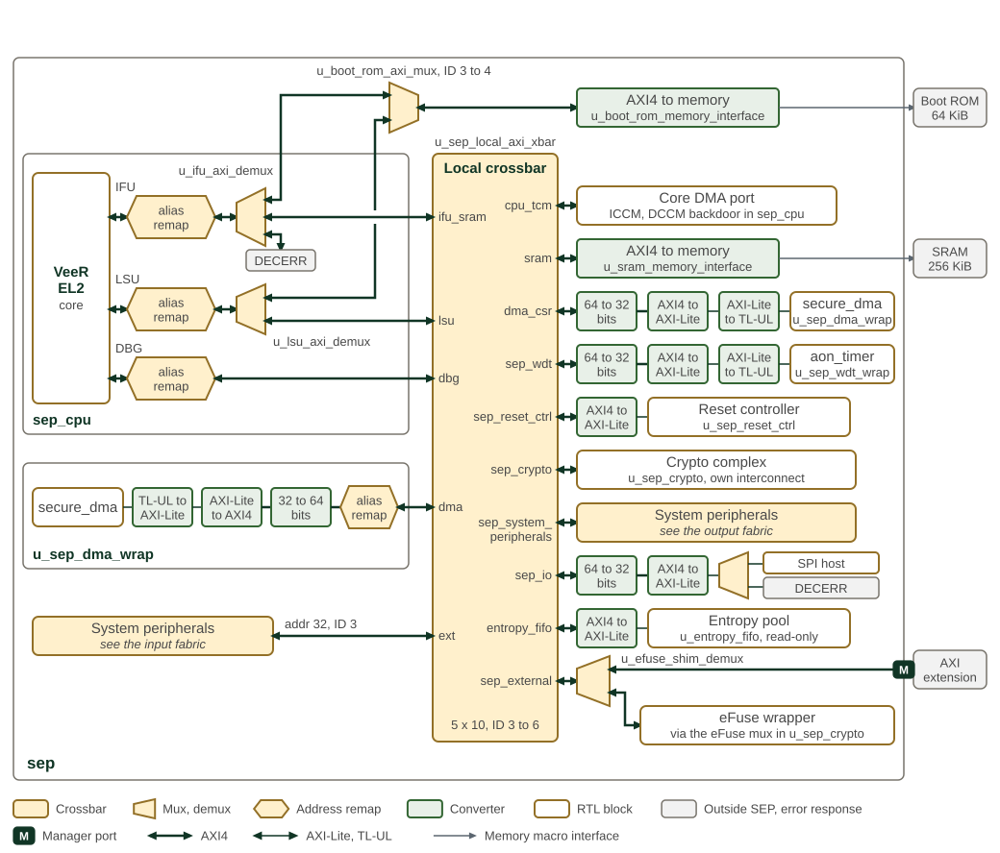
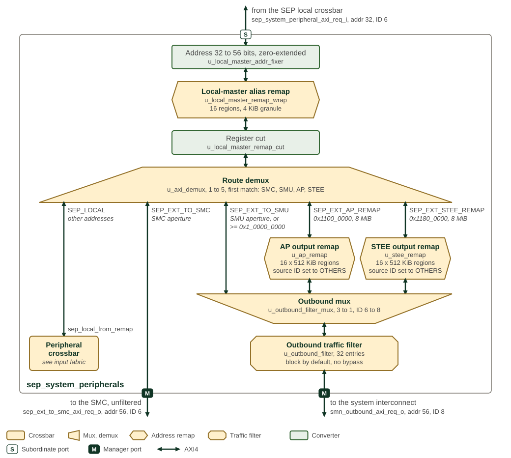
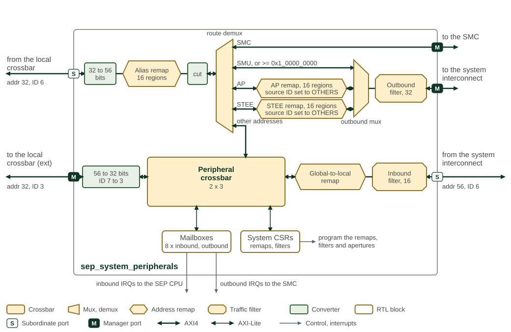

Interconnect
SEP uses a hierarchical AXI4 crossbar fabric. Masters initiate transactions;
slaves connect directly or through bridges for AXI4-Lite and OpenTitan TL-UL
interfaces. The axi_to_axi_lite bridge splits bursts into individual
transactions and retains the AXI IDs needed for responses. Write strobes
remain available on AXI4-Lite; axi_lite_to_tlul translates them into TL-UL
byte masks. Each peripheral’s register definition determines which writes
are permitted.
1. Topology
1.1. Top Level AXI4
Figure 1 shows the crossbar connectivity implemented in
hw/sys/sep/rtl/crossbars/sep_local_axi_xbar.sv, along with the dedicated
Boot ROM path that lies outside the crossbar. The crossbar has five
initiators (CPU IFU, CPU LSU, CPU DBG, DMA, and the System Interface)
and ten targets.
A few access paths are intentionally outside this crossbar:
-
Boot ROM is accessed by the CPU IFU and LSU through a dedicated point-to-point path, not through this crossbar.
-
The CPU’s own ICCM/DCCM are tightly coupled to the core and are not reached through this crossbar by the IFU/LSU. The CPU TCM target below is a backdoor AXI path into the ICCM/DCCM, used by the DMA engine to preload code/data.
-
The Alarm AGP is a feature deferred to the next generation and is not present.
The System Periph target aggregates the System Bus interface, the dual scratch register bank, the AP/STEE remap regions, and the outbound routing to SMC/SMN resources.
The Entropy Pool target is sep_entropy_fifo (0x1095_0000): a 64-bit
read-only entropy drain aperture, filled autonomously by a native EDN
endpoint on a separate hardware path (not this crossbar). Writes to it
terminate with BRESP=SLVERR.
The System Interface initiator is the external inbound master. It does
not attach to this crossbar directly; it enters SEP through the dedicated
smn_inbound port and the inbound traffic filter (block-by-default), then
through the sep_system_peripherals inner crossbar. That inner crossbar
reaches the mailboxes and system CSRs directly, and loops everything
else back into this crossbar’s System Interface initiator. The inbound filter
controls which addresses the external master may reach; it is block-by-default
after POR and configured by SEP firmware.
| Label | Meaning |
|---|---|
CPU IFU |
CPU instruction-fetch unit; initiates instruction reads. |
CPU LSU |
CPU load/store unit; initiates data reads and writes. |
CPU debug ( |
CPU debug access path. |
DMA |
Direct memory access engine; moves data without CPU load/store instructions. |
CPU TCM |
Tightly coupled memory backdoor: DMA access to the instruction closely coupled memory (ICCM) and data closely coupled memory (DCCM). |
SRAM ( |
Static random-access memory used for SEP working storage. |
DMA registers ( |
DMA control and status registers. |
Watchdog ( |
Watchdog timer. |
Reset controller ( |
SEP software reset controller. |
Crypto ( |
Cryptographic accelerators (AES, HMAC, KMAC, OTBN), entropy-source registers, eFuse controller, lifecycle controller, Key Manager mailbox, and external TRNG window. |
System peripherals ( |
System-peripheral routing, remapping, mailboxes and system registers. |
SPI host ( |
Local input/output peripheral path, including SPI boot-flash access. |
Entropy pool ( |
Read-only aperture for entropy supplied by the entropy distribution network (EDN). |
Extension, eFuse shim ( |
Outbound AXI4 port for resources outside the local crossbar; the eFuse shim CSR window is diverted by |
SMN inbound ( |
Filtered inbound path from the System Management Network (SMN). |
Boot ROM |
Read-only boot memory on the dedicated CPU fetch/load path. |

1.2. Fabric Topology
The input fabric admits external traffic through the inbound filter and system-peripheral decode. The local fabric connects SEP initiators to local resources, while the output fabric selects remapped or direct outbound paths.
In the fabric diagrams, labels such as ID 3 to 4 give the input and output
AXI transaction-ID widths in bits; they do not count ports or data bits.
The wider side of the symbol indicates the side with multiple ports.
Bus labels identify address and ID widths where they change. The filter wrapper
checks reads and writes independently, forwards permitted requests, and routes
rejected requests to an AXI error responder.
The input paths are shown in SEP input fabric, the local resource connections in SEP local fabric, and the outbound paths in SEP output fabric. The three figures share one notation. Crossbars are rectangles, muxes and demuxes are trapezoids with the wide side towards the many ports, address remaps are hexagons and traffic filters are octagons. Green boxes are converters: address-width, data-width, ID-width and protocol conversion, and register cuts. Thick lines are AXI4 and thin lines AXI-Lite or TL-UL; every AXI data path is 64 bits wide unless a converter narrows it. The labels give the address and ID widths where they change, and the port badges mark where a path crosses the module boundary.

SEP input fabric follows a request from the system interconnect through
sep_system_peripherals. The inbound filter checks it first; while SEP-scope
debug is enabled, SEP_DBG bypasses the filter. The global-to-local remap then
rebases the SEP_REGION_SIZE window at SEP_GLOBAL_BASE_ADDR to address 0 and
passes every other address unchanged. The peripheral crossbar has a second
initiator, the SEP_LOCAL port of the output fabric’s route demux, so local
masters reach the mailboxes and system CSRs through the same decode. Addresses
outside the mailbox and system CSR windows but below 0x4000_0000 are truncated
to 32 bits, their IDs reduced from 7 to 3 bits, and forwarded to the ext
initiator of the local crossbar. The crossbar answers any other address with
DECERR. The system CSRs program the inbound filter entries and the SEP aperture,
as well as the output fabric’s remaps and outbound filter.

SEP local fabric shows the local crossbar with its initiators on the
left and its targets on the right, in crossbar port order. Each CPU master and
the secure DMA master pass a local alias remap before the crossbar; the remap
rewrites the 768 MiB window at SEP_LOCAL_BASE_ADDR to 0x1000_0000. The IFU
and LSU demuxes inside sep_cpu send boot ROM addresses to the boot ROM mux,
which reaches the ROM macro without passing the crossbar, and the IFU demux
answers addresses outside the boot ROM and SEP SRAM with DECERR. The chain on
each target row is the conversion the target needs: the secure DMA registers
and the watchdog are reached as 32-bit TL-UL, and the IO block, reset
controller and entropy pool as AXI-Lite. The sep_external demux diverts the
eFuse shim CSR window to the eFuse wrapper; every other address in the
0x2000_0000 to 0x3FFF_FFFF aperture leaves SEP on the AXI extension port.
Figure 1 gives the initiator-to-target connections.

SEP output fabric follows local-master traffic that the local
crossbar sends to sep_system_peripherals. The address is zero-extended from
32 to 56 bits, passes the 16-region alias remap and a register cut, and reaches
the route demux. The demux takes the first match in the order shown: the SMC
aperture, supplied by the SMC, goes straight to the SMC without filtering; the
SMU aperture from SMU_GLOBAL_BASE_ADDR and SMU_REGION_SIZE, and any address
at or above 0x1_0000_0000, goes to the outbound mux; the AP and STEE regions
pass their output remaps, which replace the address with the programmed region
offset and set the source ID to OTHERS, before the same mux; and every other
address returns to the peripheral crossbar of the input fabric. The outbound mux
widens the ID from 6 to 8 bits, and the outbound filter, which has no bypass,
guards the path to the system interconnect.
2. Interfaces
-
Memory interfaces: BL0 ROM, DCCM, ICCM, Scratch SRAM, KM SRAM, KM ROM, OTBN IMEM, OTBN DMEM
-
Fuse controller interface
-
Entropy source interface
-
JTAG interfaces
-
RAS Interface - Alarm Processor is deferred to next generation
3. Address Remapping
Sixteen remap regions are available, each supported by an address remapper. Remappers define the following attributes:
-
Input address range
-
Remapped output address offset
-
AxCACHE value, which replaces the transaction’s own on a hit
The programmable remap regions accomplish several jobs. First, they expand local 32-bit addresses to the global 56-bit address space. Second, they provide software-programmed translation and cacheability attributes for locally initiated transactions. Out of reset, these programmable remap entries are invalid and therefore behave as transparent pass-through entries until firmware programs them.
After the alias remap, traffic routing is done as follows:
-
External or cross-subsystem traffic reaches SEP through the global aperture described by
SEP_GLOBAL_BASE_ADDRandSEP_REGION_SIZE. The currentSEP_REGION_SIZEreset is0x0100_0000(16 MiB), and firmware programs the runtime value during early boot to match the chiplet map. Barrier is recommended between programming these routing CSRs and issuing later MMIO accesses. -
SEP CPU local-alias traffic is an internal CPU-side view of the SEP map. It exists so software can use high alias addresses such as
0xD000_0000for resources whose direct internal addresses begin at0x1000_0000. This high local alias span has a fixed SEP-local size of 768 MiB. -
Any transaction that doesn’t get routed to local resources is directly routed out to the SMN.
To compute global addresses for external agents, firmware needs the chiplet ID or chiplet BAR for the integration. Both the chiplet ID and chiplet BAR are available in SMC as MMRs.
4. Filtering and Protection
Both SEP filters are instances of the common axi_filter_wrap block. The
inbound filter has 16 entries and the outbound filter has 32; each entry
is one filter_ctrl register triple (FILTER_CONFIG, START_ADDR,
END_ADDR). Both carry 56-bit addresses on a 64-bit data bus, both
enable NS and source ID matching, and both block traffic that matches no
entry.
The inbound filter is bypassed in its entirety, admitting all inbound
traffic, while SEP-scope debug is enabled; see
Disable Vector Format (SIP_DIS / SYS_DIS) for the SEP_DBG control. The
outbound filter has no bypass and is always in effect.
The decode algorithm — entry priority, the match conditions, the address range granule and its widening direction, and the response returned to a blocked initiator — is common to SEP and SMC. It is documented once with the IP in AXI Traffic Filter.
5. Routing

SEP system-peripheral traffic management illustrates the AXI4 traffic management performed by the system peripherals block. Its left edge faces the SEP local crossbar and its right edge the SMU; the upper lane is the outbound path and the lower lane the inbound path, drawn in the notation of Fabric Topology. The figure is an overview: SEP output fabric and SEP input fabric give every element with its instance name and address window. The AXI4 subordinate port on the left is driven by the local masters that the local crossbar connects to it: the CPU LSU, the CPU debug master and the secure DMA. Traffic may be local to the SEP or outbound to external resources either within the SMU or beyond the SMU. Traffic beyond the SMU to the rest of the chiplet or remote chiplets will bridge to the system NOC also known as the SMN.
5.1. Transaction Routing
Local SEP resources include peripheral CSRs, SRAM and the AP- and STEE-controlled remappers. SEP CPU direct addresses, the CPU local-alias view and the external global aperture are distinct views, as described in Address Remapping.
Neighboring SMC resources are accessed through the SMC global aperture programmed by SMC firmware and supplied to SEP/SMU integration logic. That aperture is independent from the SEP CPU local-alias range.
Traffic not routed to local SEP or neighboring SMC resources goes to the SMN system NoC. Firmware selects the outbound path according to the resource:
-
Shared resources use AP- or STEE-controlled remappers for address translation. These remappers are controlled by external software, such as the Ascalon AP. Inbound filter policy must restrict the STEE remapper to STEE access.
-
External private memory and system MMIO use the direct SMN path.
SEP outbound traffic carries a source ID in AxUSER. Both AP- and STEE-controlled
remappers replace it with OTHERS. Other traffic retains the initiator’s ID:
the CPU masters drive SEP’s ID, while the secure DMA master leaves AxUSER at
zero (OTHERS). AxPROT, including NS, passes unchanged. The outbound filter
checks address, NS and source ID after remapping; firmware must restrict
OTHERS traffic from M-mode assets.
The inbound filter blocks traffic by default. Its entries reside in the system CSRs, reached directly by local masters and by external masters only through an enabled inbound filter entry (or the stated SEP debug bypass). Matching rules are in Filtering and Protection.
See Mailboxes under Peripherals for host mailbox operation.
6. Memory Map and Register Reference
6.1. Memory Map
The Memory Map chapter lists the address windows. The common AXI Traffic Filter reference describes the filter register layout and programming rules.
6.2. Detailed Register Map
See the owning register references linked above.